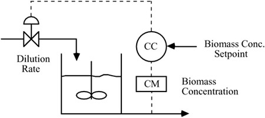
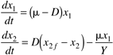
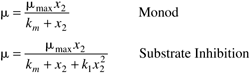

| [ Team LiB ] |
|
M7.1 BackgroundBiochemical reactors are used in a wide variety of processes, from waste treatment to alcohol fermentation. Biomass (cells) consume substrate (sugar or waste chemicals) and produce more cells. A typical control and instrumentation diagram, with biomass concentration as the measured output, is shown in Figure M7-1. Figure M7-1. Simplified control and instrumentation diagram for a biochemical reactor. ModelThe modeling equations for a bioreactor are  where the state variables are x1 = biomass (cell) concentration = mass of cells/volume, and x2 = substrate concentration = mass of substrate/volume. The manipulated input is D = dilution rate = F/V = volumetric flow rate/reactor volume, and the disturbance input is x2f = substrate feed concentration. Two possible expressions for the specific growth rate are monod and substrate inhibition kinetics, which include  Notice that the monod-specific growth rate model is a subset of the substrate inhibition model (k1 = 0). Scale UpOne motivation for working with the dilution rate as the manipulated input is that the resulting dynamic model is independent of scale. A reactor volume of 1 liter with a flow rate of 0.3 liters/hour has the same dynamic behavior as a reactor volume of 1000 liters with a flow rate of 300 liters/hour. Thus, a small-scale (laboratory or pilot plant) reactor can be used to predict the behavior of a production-scale reactor. |
| [ Team LiB ] |
|